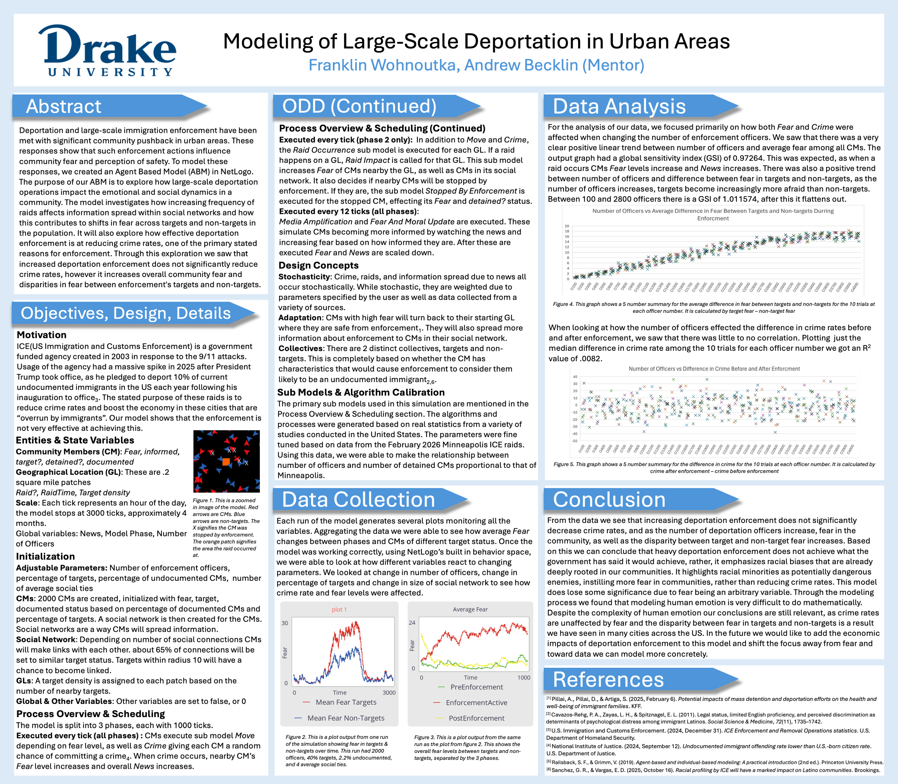
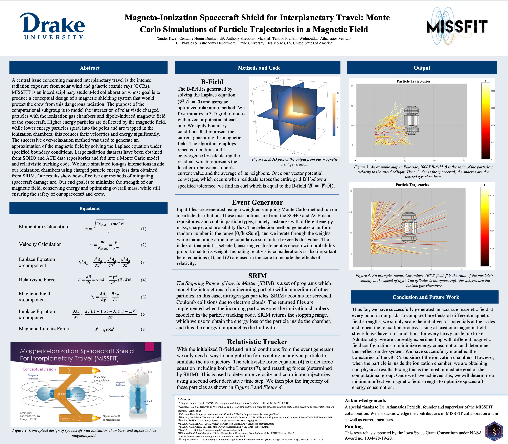

Welcome
Hi, I'm Franklin — a student at Drake University studying Computer Science, Mathematics, and Data Analytics with a minor in Physics. I'm passionate about software development, machine learning, data analysis, and computational science.
Skills
About Me
I am a junior at Drake University pursuing majors in Computer Science, Mathematics, and Data Analytics with a minor in Physics.
I enjoy computational research, scientific simulation, machine learning, and data analysis.
I have worked with Drake University's MISSFIT computational research group, contributing to particle tracking simulations written in C.
Projects
Machine Learning
Cause of College Alcohol Consumption
Analysis of factors contributing to alcohol consumption.
View on GitHub →Research Posters
Modeling of Large Scale Deportation in Urban Areas
This is a poster I created for DUCURS, a reserch conference at Drake Univeristy. The project was created in responce to the ICE raids that took place in January of 2026 in Minneapolis Minnesota. I wanted to unbiasedly show how effective this method of deportation is at redusing crime rates while taking into account the toll it takes on the comunity. Using data from a variaty of sources I was able to create a sophisticated simulation that produced meaningfull results.

Monte Carlo Simulations of Particle Trajectories in a Magnetic Field
Over the spring of 2026 I was the leader of the computational group sector of MISSFIT (Magneto-Ionization Spacecraft Sheild for Interplanetary Travel), a collaberative reaserch project at Drake University. We created this poster to showcase our work at DUCURS, a conference at Drake University, and plan to present at other conferences in the future.

Random Seach for Treasure on Conected Graphs
My partner and I created this poster for our mathematics capstone. Inspired by the classic graph theory game, cops and robbers, we created a game in which a hunter traverses a graph randomly untill treasure is found. I would like to work on this project further, testing our other parmaters and eventualy get a paper published.

Contact
Feel free to reach out regarding research, collaboration, or opportunities.